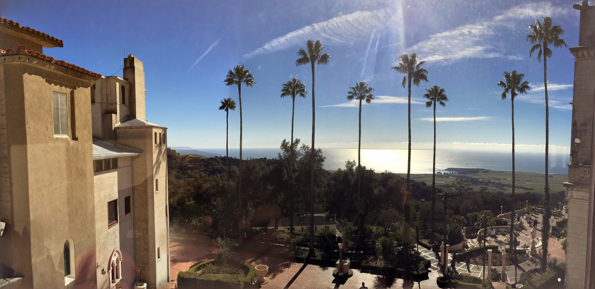
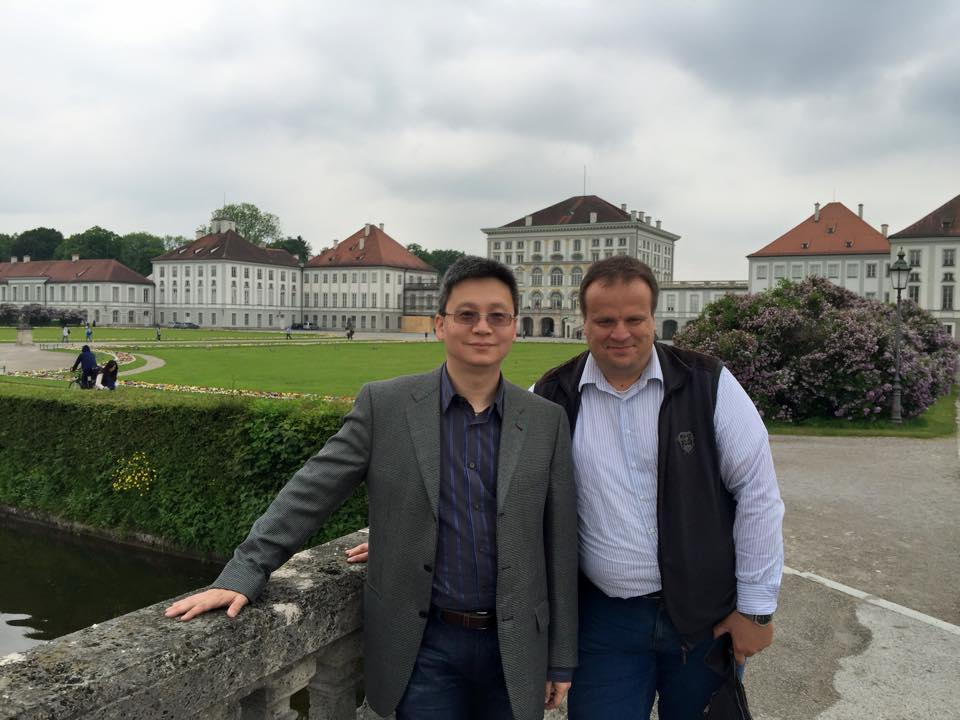

|
 |
Vision Problems from two face images? Stereo? Aging? Color from Gray? Face Recognition? Novel View Rendering? More???
|
 |
MICAD 2021 invited talk is here; CVPR 2021 Workshop Keynote link. Recent Talk Slides on Deep Learning for Medical Imaging and Clinical Informatics, for SNMMI 2018, GTC Taiwan 2018, Sol Goldman International Conf. & Think Tank Meeting on Artificial Intelligence, 2018. We won the following 8 best paper awards in the recent 5 years. Bowen Li just won the AFSUMB 2021 YIA (Young Investigator Award) Sliver Award!
Our
work are/were selected for MICCAI-MedIA Special Issues of Best Papers
in both 2019 (Dakai Jin, Dazhou Guo, et al.) and 2020 (Jiawen Yao, Ling
Zhang, et al.), two years in a row!
Our work won MICCAI 2018 Young Research Publication Impact Award (the 5 year "test-of-time" award, Dr. Holger Roth)!
Our work won one of MICCAI 2017 Young Scientist Award Final-list (Dr. Adam Harrison)!
Our
work won RSNA 2018 Research Trainee Award in Informatics Category
(the "best research paper" award, DeepLesion topic, Dr. Ke Yan); we
won the same award
in RSNA 2016 (Radiology Big Data Self-learning, Dr. Xiaosong Wang)! followed by my former NIH trainees won the same
awards in RSNA 2019 (Dr. Yuxing Tang) and 2020 (DeepLesion topic again, Dr. Youbao Tang), respectively after I left NIH. Four times in five year. I believe this is a
history.
NIH DeepLesion dataset is available for download (32000 CT cases from 11000 studies): https://nihcc.box.com/v/
NIH Chest X-Ray-14 dataset is available for download (112,120 frontal images from 32,717 unique patients): https://nihcc.app.box.
Lymph Node
Detection and Segmentation datasets from our MICCAI 2014, 2015 papers are available for download! https://wiki.cancerimagingarchive.net/display/Public/CT+Lymph+Nodes
Pancreas Segmentation datasets from our MICCAI 2015 paper are available for download! https://wiki.cancerimagingarchive.net/display/Public/Pancreas-CT
News on: https://www.training.nih.gov/postbac_distinguished_mentor_awards
深度学习和医学影像在预防医学中的机会； 吕乐， 吴山东, 放射学实践， 2018年10月，应邀特刊(pdf)
I
currently lead the gloabl Medical AI R&D efforts for DAMO Academy, Alibab Group.
I had worked at PAII Inc., leading the division of Bethesda Research
Lab from June 2018 until July 2021, after more than five productive
years
at National Institutes of Health, Clinical Center, Radiology and
Imaging Science Department, and from NVIDIA
AI-Infra division. I am an IEEE Fellow on medical imaging, AI and oncology imaging; also serve as an Associate Editer for IEEE Trans. Pattern Analysis and Machine Intelligence (IF: 17.8),
and IEEE Signal Processing Letters. I have been happily and fortunately
serving as one of the active strong links between the MICCAI/TMI/MedIA
community and IEEE Computer Society (CVPR/TPAMI). Our work have been
selected for MICCAI 2020 and 2019 Medical Image Analysis special issues
(selected best paper track), MICCAI 2018 young researcher publication
impact award, MICCAI 2017 YSA runner up, MICCAI 2017 and 2016 travel
awards; IEEE TMI most cited article in 5 years (Dr. Hoo-chang Shin), IEEE CVPR most cited
medical imaging paper (Dr. Xiaosong Wang) in 5 years. Our two most important medical
imaging dataset work both were published at IEEE CVPR 2017 (NIH
ChestXray14) and 2018 (NIH DeepLesion). I also contributed to
AAAI/NeurIPS/ICML in the past. My former NIH
trainees won the RSNA Informatics best paper awards four times in the
last 5 years (Xiaosong Wang 2016, Ke Yan 2018, Yuxing Tang 2019, Youbao Tang 2020)! I am also an elected MICCAI Board Member starting in Feb. 2021.
I pursue how to push modern medical image
understanding and semantic parsing to fit into revolutionary clinical
workflow practices.
There are four key ingredients: software and hardware code development
platforms; close R&D collaboration with physicians-in-the-loop;
evaluation
& validation via large scale clinical imaging datasets; and mapping
the
recent progresses in statistical learning, machine learning, computer
vision
and video computing (from 2D/3D to 3D and 4D) towards medical imaging
& clinical Informatics. I am devoting my next 5~10 years to focus
on computational translational medicine for postitive and large-scale
patient impacts. I love patients and physicians!
I
won the Best Summer Intern Mentor Award 2013, NIH Clinical
Center
(only one from my institute); and the Postbac Mentor of the Year
Award
2015, NIH (one of three awardees in NIH), NIH Clinical Center CEO Award
for Research Excellence and Impacts on Patient Care, 2017. Together
with my Postdoc trainees whom I have fortunately worked with, we
won a couple awards: AFSUMB 2021 YIA (Young Investigator Award) Sliver
Award (Mr. Bowen Li), MICCAI 2020 Medical Image Analysis Best Paper
finalist (Dr. Jiawen Yao), MICCAI 2019 Medical Image Analysis Best Paper finalist (Dr. Dakai Jin), MICCAI 2018 Young Researcher Publication Impact
Award (Dr. Holger Roth), RSNA 2018 Research Trainee Award (Dr. Ke Yan),
MICCAI 2017 Young Scientist Award Runner-up (Dr. Adam P. Harrison), and
RSNA 2016 Research Trainee Award (Dr. Xiaosong Wang).
I
was a Senior Staff Scientist, Image Analytics and Informatics, at Siemens
Corporate Research, from Nov. 2011 until Jan. 2013. I was a Staff Scientist at
Siemens Computer Aided Diagnosis (CAD) Group, Siemens Medical Solutions at
I
received my Ph.D. degree of Computer Science from
Executive Director, PAII Bethesda Research Lab (link).
IEEE Fellow (Contributions to Machine Learning for Cancer Detection and Diagnosis) class of 2021, Senior Member, since 2014
Elected Board Member, MICCAI society (link), 2021
Asso. Editor, IEEE Trans. Pattern Analysis and Machine Intelligence (link), IEEE Signal Processing Letters (link)
Ph.D. in Computer Science,
MSE in Computer Science,
Internships at Microsoft Research Beijing & Redmond, 2000-2001,
2004 (Mentors: Harry Shum, Kentaro Toyama, Zhengyou Zhang, Long Quan)
Visiting Student in Electronic Engineering Department, Chinese
University of Hong Kong (Advisors: Hung-Tat Tsui,
Zhanyi Hu)
Graduate
Student in Pattern Recognition and
Intelligent Systems, NLPR,
B.E. in ME & Automation Control,
Recent Activities:
CVPR 2016 3rd Workshop on How Big
Data is Possible for Medical Image Analysis, invited talks only, Las Vegas, NV, July 1st, 2016
CVPR 2015 2nd Workshop on How Big Data is Possible for Medical Image Analysis, invited talks only, Boston, MA, June 11th, 2015
Academic Services: Associate Editor of IEEE Trans. Pattern Analysis and Machine Intelligence (TPAMI), IEEE Signal Processing Letter; Area Chair of CVPR 2022, AAAI 2022; CVPR 2021, MICCAI 2021, ICIP 2021, AAAI 2021 (COVID-19 special track); CVPR 2020, AAAI 2020, WACV 2020; CVPR 2019, MICCAI 2018, CVPR 2017, ICIP 2017, MICCAI 2016, MICCAI 2015; Industry Co-chair for MICCAI 2022, ICHI 2019; Demo Chair of CVPR 2017; Outstanding Reviewer Award: NeurIPS 2020, CVPR 2018, BMVC 2017
Program /
Paper Review Committee: IEEE
CVPR, 2017, 2016, 2015, 2014, 2013, 2012, 2011, 2010, 2009; IEEE ICCV 2017, 2015, 2013,
2011, 2009; ECCV 2016, 2012, 2010; ACCV 2016, 2014, 2012, 2010, 2009
MICCAI 2017, 2014, 2013, 2012, 2011, 2010, 2009,
various MICCAI workshops, 2015, 2014, 2013, 2012 (Medical Computer Vision; Deep Learning in Medical Image
Analysis)
Journal Paper
Reviewer: IEEE Trans. PAMI,
IEEE Trans. Image Processing, IEEE Trans. Medical Imaging, Medical Image
Analysis, PLOS One, Pattern Recognition, Pattern Recognition Letter; Academic
Radiology, Medical Physics, Computerized Medical Imaging and Graphics, IEEE
Journal of Biomedical and Health Informatics
Wokshop
Organizer/Co-organizer:
IEEE CVPR Medical Computer Vision Workshop, 2015, 2012; NIPS workshop on
Machine Learning for Clinical Data Analysis and Healthcare, 2013
Recent & not-so-recent invited Talks:
|
Talk at MICAD 2021 invited talk https://www.youtube.com/watch?v=h-k9xkRYDXE; Talk by Dakai at CVPR-MCV 2020: https://www.youtube.com/watch?v=jqZM45aHixw Talk at CVPR 2019 by Robin.ly: Le Lu, Executive Director @ PAII Inc. Bethesda Research Lab https://www.youtube.com/watch?v=pQhrE2Zd3d0 Google Tech Talk at Google Cloud AI, May 11th, 2017 https://www.youtube.com/watch?v=TlC1pDXVdSI&t=3341sTalk at GTC, GTCx and GTC-DC http://registration.gputechconf.com/quicklink/7L1Rg10, April 6th, 2016, Silicon Valley, CA, USA (pdf) Talk on "A Statistical Aspect of Imaging Analytics Based Computer-Aided Diagnosis" (Summary of my Siemens work in 2006~2013, still with some insights: pdf) Talk at
MICCAI 2015 PC Meeting Symposium: Heterogeneous Cascades Go Deeper via
Integrating Shallow and Deep Models, May 18th, 2015, Munich, Germany Talk at MICCAI 2014 Tutorial: Thoracoabdominal Lymph-node Detection: Exploration of Shallow and Deep Models, Sept. 2014, Cambridge, MA, USA (ppt) Talk at MICCAI
2010 on Vertebra Segmentation and Identification, Sept. 2010, |
|
Talk at
Computational and Visualization Challenges in the New Era of Virtual
Colonoscopy Meeting, MICCAI, Sept. 06, 2008, |
|
RSNA Talk on ICV
detection for |
|
ICML Talk on Clustering (International Conference of Machine Learning, June 2006,
Pittsburgh), (ppt) |
|
CVPR Talk
on Nonparametric Robust Visual Tracking (IEEE Conference
on Computer Vision and Pattern Recognition, June 2007, |
|
I Gave a Tech Talk at Google in May 2006! The video was an overview of my
graduate research on image patch representations/modeling for visual
recognition and tracking. During the past year, some parts have been updated.
|
Research Interests:
Deep Learning for Everything, :-)) (100+++)
Learning based 3D Volumetric, Surface, Curve Parsing for Medical Diagnosis (20+++)
New Classification Paradigms for Computer-aided Diagnosis (MICCAI 2011, CVPR 2011, Ongoing)
Discriminative/Generative Feature Learning for Computer-aided Diagnosis (Ongoing)
Structure Parsing for Medical Imaging and Analysis (ICCV 2009, MICCAI 2009, MICCAI 2010, Ongoing)
Supervised Learning Approach for Medical Imaging and Analysis (CVPR 2008, ECCV 2008, CVPR 2010, CVPR 2011, Ongoing)
Supervised Discriminative Dimension Reduction (Ongoing)
Online Appearance Modeling for Tracking and Recognition
(NIPS 2006, CVPR 2007)
New Clustering Method for Visual Data (ICML 2006)
Scene Analysis and Category Recognition (CVPR 2005)
Articulated Object Motion Modeling and Recognition (NIPS 2004)
Efficient Particle Filtering using RANSAC (FPIV 2004, IVC 2006)
Real-time Video Mosacing with Medical and Non-medical Applications (CVPR 2003
Demo)
Graphical Models and Tree-Structured Object Tracking (Life time interest,
but never get a chance to do it, :-)) )
Publications (peer-refereed major conferences and journals):
______________________________________________________________________________________________________________________________________________________________________________________
2022
219, Ashwin Raju, Shun Miao, Chi-Tung Cheng, Le Lu, Mei Han, Jing Xiao, Chien-Hung Liao, Junzhou Huang, Adam P. Harrison: Deep Implicit Statistical Shape Models for 3D Medical Image Delineation. AAAI 2022 (accepted, 2022)
2021
218, Peng Wang*; Yuhsuan Wu*; Bolin Lai; Xiao-Yun Zhou; Le Lu; Wendi Liu; Huabang Zhou; Lingyun Huang; Jing Xiao; Adam P. Harrison; Ningyang Jia#; Heping Hu#: A Deep Learning Pipeline for Localization, Differentiation, and Uncertainty Estimation of Liver Lesions using Multi-phasic and Multi-sequence MRI. （in review）, Arxiv 2110.08817, 2021
217, Jiawen Yao*, Kai Cao*, Yang Hou*, Jian Zhou*, Yingda Xia, Isabella Nogues, Qike Song, Hui Jiang, Xianghua Ye, Jianping Lu, Gang Jin, Hong Lu, Chuanmiao Xie, Rong Zhang, Jing Xiao, Zaiyi Liu, Feng Gao, Yafei Qi, Xuezhou Li, Yang Zheng, Le Lu, Yu Shi#, Ling Zhang, Deep Learning for Fully Automated Prediction of Overall Survival in Patients Undergoing Resection for Pancreatic Cancer. （in review）, 2021
216, Dazhou Guo*, Jia Ge*, Xianghua Ye*, Senxiang Yan, Yi Xin, Yuchen Song, Bing-shen Huang, Tsung-Min Hung, Zhuotun Zhu, Ling Peng, Yanping Ren, Rui Liu, Gong Zhang, Mengyuan Mao, Xiaohua Chen, Zhongjie Lu, Wenxiang Li, Yuzhen Chen, Lingyun Huang, Jing Xiao, Adam P. Harrison, Le Lu, Chien-Yu Lin#, Dakai Jin#, Tsung-Ying Ho#: Comprehensive and Clinically Accurate Head and Neck Organs at Risk Delineation via Stratified Deep Learning: A Large-scale Multi-Institutional Study. （in review, pdf）, Arxiv. 2111.01544, 2021
215, Xianghua Ye*, Dazhou Guo*, Chen-kan Tseng, Jia Ge, Tsung-Min Hung, Ping-Ching Pai, Yanping Ren, Lu Zheng, Xinli Zhu, Ling Peng, Ying Chen, Xiaohua Chen, Chen-Yu Chou, Danni Chen, Jiaze Yu, Yuzhen Chen, Feiran Jiao, Yi Xin, Lingyun Huang, Guotong Xie, Jing Xiao, Le Lu, Senxiang Yan, Dakai Jin#, Tsung-Ying Ho#: Multi-institutional Validation of Two-Streamed Deep Learning Method for Automated Delineation of Esophageal Gross Tumor Volume using planning-CT and FDG-PETCT. （in review）, Arxiv. 2110.05280, 2021
214, Ethan Nguyen, Haichun Yang, Ruining Deng, Yuzhe Lu, Zheyu Zhu, Ye Chen, Joseph T. Roland, Le Lu, Bennett A. Landman, Agnes B. Fogo, Yuankai Huo: Circle Representation for Medical Object Detection. IEEE Trans. on Medical Imaging (accepted), 2021
213, Bowen Li*; Dar-In Tai*#; Ke Yan; Yi-Cheng Chen; Shiu-Feng Huang; Tse-Hwa Hsu; Wan-Ting Yu; Jing Xiao; Le Lu; Adam P. Harrison#: Accurate and Generalizable Quantitative Scoring of Liver Steatosis from Ultrasound Images via Scalable Deep Learning. （in review）, Arxiv. 2110.05664, 2021
212, Chi-Tung Cheng*, Jinzheng Cai*, Wei Teng, Youjing Zheng, YuTing Huang, Yu-Chao Wang, Chien-Wei Peng, Youbao Tang, Wei-Chen Lee, Ta-Sen Yeh, Jing Xiao, Le Lu, Chien-Hung Liao#, Adam P. Harrison#: A Flexible Three-Dimensional Hetero-phase Computed Tomography Hepatocellular Carcinoma (HCC) Detection Algorithm for Generalizable and Practical HCC Screening. （in review）, Arxiv. 2108.07492, 2021
211, Lianyan Xu, Ke Yan, Le Lu, Weihong Zhang, Xu Chen, Xiaofei Huo, Jingjing Lu#: A External and Internal Validation of a Computer Assisted Diagnostic Model for Detecting Multi-Organ Mass Lesions in CT images. Chinese Medical Sciences Journal, Vol. 36， Issue (3): 210-217，doi: 10.24920/003968，（pdf） 2021，CT图像中多器官占位性病变的计算机辅助检测模型的外部和内部验证 （所属专题： 人工智能与精准肿瘤学）
210, C. Hsieh*, Kang Zheng*, C. Lin, Le Lu, Li W, Chen F, Wang Y, Chou X, Wang F, Xie G, Xiao J, Shun Miao#, Chang-fu Kuo#: Automated and Precise Bone Mineral Density Prediction and Fracture Risk Assessment using Hip/Lumbar Spine Plain Radiographs via Deep Learning. Nature Communications (pdf, nature link), September. 2021, DOI: 10.21203/rs.3.rs-371880/v12020, Research Square (pdf), 31 March 2021
209, Nai-Ming Cheng*, Jiawen Yao*, Jinzheng Cai, Xianghua Ye, Shilin Zhao, Kui Zhao, Wenlan Zhou, Isabella Nogues, Yuankai Huo, Chun-Ta Liao, Hung-Ming Wang, Chien-Yu Lin, Li-Yu Lee, Jing Xiao, Le Lu, Ling Zhang* and Tzu-Chen Yen*: Deep learning for fully automated prediction of overall survival in patients with oropharyngeal cancer using FDGPET imaging: an international retrospective study, Clinical Cancer Research (pdf, pdf2) by American Association for Cancer Research, April 2021
208, Chi-Tung Cheng*, Yirui Wang*, Huan-Wu Chen, Po-Meng Hsiao, Chun-Nan Yeh, Chi-Hsun Hsieh, Shun Miao, Jing Xiao, Chien-Hung Liao, Le Lu: A Scalable Physician-Level Deep Learning Algorithm Detects Universal Trauma on Pelvic Radiographs, Nature Communications (pdf, nature link), Feb. 2021
207, Jiawen Yao, Kai Cao, Yang Hou, Le Lu, Jianping Lu, Qike Song, Gang Jin, Jing Xiao, Yu Shi, Ling Zhang: DeepPrognosis: Preoperative Prediction of Pancreatic Cancer Survival and Surgical Margin via Comprehensive Understanding of Dynamic Contrast-Enhanced CT Imaging and Tumor-Vascular ContactParsing . Elsevier Journal of Medical Image Analysis, (MICCAI-MedIA 2020 Selected Papers Special Issue, pdf), October, 2021
206, Mengyang Zhao, Aadarsh Jha, Quan Liu, Bryan A. Millis, Anita Mahadevan-Jansen, Le Lu, Bennett A. Landman, Matthew J. Tyskac, and Yuankai Huo: Faster Mean-shift: GPU-accelerated Embedding-clustering for Cell Segmentation and Tracking. Elsevier Journal of Medical Image Analysis, (accept), 2021
205, Kang Zheng, Yirui Wang, et al.: Deep Learning-based Opportunistic Osteoporosis Screening using Plain Film Radiography. Medical Imaging meets NeurIPS, link2 (2021)
204, Bowen Li, Xinping Ren, Ke Yan, Le Lu, Guotong Xie, Jing Xiao, Dar-In Tai, Adam P. Harrison: Learning from Subjective Ratings Using Auto-Decoded Deep Latent Embeddings. (early accept, MICCAI Student Travel Award, ORAL) MICCAI 2021, CoRR abs/2104.05570 (2021)
203, Kang Zheng, Yirui Wang, Xiaoyun Zhou, Fakai Wang, Le Lu, Chihung Lin, Lingyun Huang, Guotong Xie, Jing Xiao, Chang-Fu Kuo, Shun Miao: Semi-Supervised Learning for Bone Mineral Density Estimation in Hip X-ray Images. (early accept) MICCAI 2021, CoRR abs/2103.13482 (2021)
202, Youbao Tang, Jinzheng Cai, Ke Yan, Lingyun Huang, Guotong Xie, Jing Xiao, Jingjing Lu, Gigin Lin, Le Lu: Weakly-Supervised Universal Lesion Segmentation with Regional Level Set Loss. (early accept) MICCAI 2021, CoRR abs/2105.01218 (2021)
201, Youbao Tang, Ke Yan, Jinzheng Cai, Lingyun Huang, Guotong Xie, Jing Xiao, Jingjing Lu, Gigin Lin, Le Lu, Lesion Segmentation and RECIST Diameter Prediction via Click-driven Attention and Dual-path Connection, MICCAI 2021, CoRR abs/2105.01828 (2021)
200, Jieneng Chen, Ke Yan, Yu-Dong Zhang, Youbao Tang, Xun Xu, Shuwen Sun, Qiuping Liu, Lingyun Huang, Jing Xiao, Alan L. Yuille, Ya Zhang, Le Lu: Sequential Learning on Liver Tumor Boundary Semantics and Prognostic Biomarker Mining. (MICCAI Student Travel Award) MICCAI 2021, CoRR abs/2103.05170 (2021)
199, Dazhou Guo*, Xianghua. Ye*, Jia Ge, Xing Di, Le Lu, Lingyun Huang, Guotong Xie, Jing Xiao, Senxiang Yan, Dakai Jin, DeepStationing: Thoracic Lymph Node Station Parsing in CT Scans using Anatomical Context Encoding and Key Organ Auto-Search, (*equal contribution) MICCAI 2021, (2021)
198,
Fengze Liu*, Ke Yan*, Adam Harrison, Dazhou Guo, Le Lu, Alan Yuille,
Lingyun Huang, Guotong Xie, Jing Xiao, Xianghua Ye, Dakai Jin, SAME: Deformable Image Registration based on Self-supervised Anatomical Embeddings, (*equal contribution) MICCAI 2021, (2021)
197, Yingda Xia, Le Lu, Lingyun Huang, Guotong Xie, Jing Xiao, Alan Yuille, Kai Cao, Ling Zhang, Effective Large-scale Screening of Multi-type Pancreatic Cancers on Non-contrast CT Scans via Anatomy-Aware Transformers, MICCAI 2021, (2021)
196, Ke Yan, Youbao Tang, Adam P. Harrison, Jinzheng Cai, Le Lu, Jingjing Lu: Interpretable and Label-Efficient Medical Image Classification with Self-Supervised Anatomical Embeddings and Clinical Knowledge, MIDL (short paper), 2021
195, Fakai Wang, Kang Zheng, Le Lu, Jing Xiao, Min Wu, Shun Miao: Automatic Vertebra Localization and Identification in CT by Spine Rectification and Anatomically-constrained Optimization. IEEE CVPR, 2021, Nashville, USA, Arxiv. 2012.07947, 2020
194, Jinzheng Cai, Youbao Tang, Ke Yan, Adam P. Harrison, Jing Xiao, Gigin Lin, Le Lu: Deep Lesion Tracker: Monitoring Lesions in 4D Longitudinal Imaging Studies. IEEE CVPR, 2021, Nashville, USA, Arxiv. 2012.04872, 2020
193, Tianyi Zhao*, Kai Cao*, Jiawen Yao, Isabella Nogues, Le Lu, Lingyun Huang, Jing Xiao, Zhaozheng Yin, Ling Zhang: 3D Graph Anatomy Geometry-Integrated Network for Pancreatic Mass Segmentation, Diagnosis, and Quantitative Patient Management. IEEE CVPR, 2021, Nashville, USA, Arxiv. 2012.04701, 2020
192, K Yan, Y Tang, AP Harrison, J Cai, L Lu, J Lu: Interpretable and Label-Efficient Medical Image Classification with Self-Supervised Anatomical Embeddings and Clinical Knowledge, MIDL 2021
191, Yun-Ju Huang, Shun Maio, Kang Zheng, Le Lu, Yuhang Lu, Chihung Lin, Chang-Fu Kuo: A Radiographic Bone Texture Analysis Using Deep Learning Models for Early Rheumatoid Arthritis Diagnosis. DOI: https://doi.org/10.21203/rs.3.rs-76193/v1, (pdf) 2021
190, Yirui
Wang, Kang Zheng, Chi-Tung Chang, Xiao-Yun Zhou, Zhilin Zheng, Lingyun
Huang, Jing Xiao, Le Lu, Chien-Hung Liao, Shun Miao: Knowledge
Distillation with Adaptive Asymmetric Label Sharpening for
Semi-supervised Fracture Detection in Chest X-rays. IPMI (accepted), 2021 J
189, Xinyu Zhang*, Yirui Wang*, Chi-Tung Cheng, Le Lu, Jing Xiao, Chien-Hung Liao, Shun Miao: A New Window Loss Function for Bone Fracture Detection and Localization in X-ray Images with Point-based Annotation. AAAI (accepted, *XZ, *YW contributed equally), arxiv. 2012.04066, 2021
188, Ashwin Raju, Shun Miao, Chi-Tung Cheng, Le Lu, Mei Han, Jing Xiao, Chien-Hung Liao, Junzhou Huang, Adam P. Harrison: Deep Implicit Statistical Shape Models for 3D Medical Image Delineation. CoRR abs/2104.02847 (2021)
187, Fakai Wang, Kang Zheng, Yirui Wang, Xiaoyun Zhou, Le Lu, Jing Xiao, Min Wu, Chang-Fu Kuo, Shun Miao: Opportunistic Screening of Osteoporosis Using Plain Film Chest X-ray. (ORAL) CoRR abs/2104.01734, PRIME: 4th International Workshop on PRedictive Intelligence in MEdicine, (2021)
186, Bolin Lai*, Xiaoyu Bai*, Yuhsuan Wu*, Xiao-Yun Zhou, Jinzheng Cai, Yuankai Huo, Lingyun Huang, Peng Wang, Yong Xia, Jing Xiao, Le Lu, Heping Hu, Adam Harrison: Fully-Automated Liver Tumor Localization and Characterization from Multi-Phase MR Volumes Using Key-Slice ROI Parsing: A Physician-Inspired Approach, (ORAL) PRIME: 4th International Workshop on PRedictive Intelligence in MEdicine, (2021)
185, Xiao-Yun Zhou, Bolin Lai, Weijian Li, Yirui Wang, Kang Zheng, Fakai Wang, Chihung Lin, Le Lu, Lingyun Huang, Mei Han, Guotong Xie, Jing Xiao, Chang-Fu Kuo, Adam P. Harrison, Shun Miao: Scalable Semi-supervised Landmark Localization for X-ray Images using Few-shot Deep Adaptive Graph. (Full ORAL), CoRR abs/2104.14629, DALI: The MICCAI Workshop on Data Augmentation, Labeling, and Imperfections, (2021)
184, Bolin Lai, Yuhsuan Wu, Xiao-Yun Zhou, Peng Wang, Le Lu, Lingyun Huang, Mei Han, Jing Xiao, Heping Hu, Adam P. Harrison: Hetero-Modal Learning and Expansive Consistency Constraints for Semi-Supervised Detection from Multi-Sequence Data. CoRR abs/2103.12972，The 12th International Workshop on Machine Learning in Medical Imaging, (2021)
183, Jieneng Chen, Yongyi Lu, Qihang Yu, Xiangde Luo, Ehsan Adeli, Yan Wang, Le Lu, Alan L. Yuille, Yuyin Zhou: TransUNet: Transformers Make Strong Encoders for Medical Image Segmentation. CoRR abs/2102.04306, Interpretable Machine Learning in Healthcare workshop, ICML 2021 (2021)
R50, "Accurate and Generalizable Quantitative Scoring of Liver Steatosis from Ultrasound Images via Scalable Deep Learning", YIA Sliver Medal, AFSUMB 2021
R49, "Accurate and Reliable Liver Steatosis Assessment From Conventional Ultrasound Images Trained With Subjective Ratings", Scientific Oral, RSNA 2021
R48, "Accurate Weakly-supervised Volumetric Universal Lesion Segmentation Using Large-scale Clinical RECIST Diameter Annotations And Regional Level Set Loss", Scientific Oral, RSNA 2021
R47, "One Automatic RECIST Measurement In Longitudinal CT Imaging Studies", Scientific Oral, RSNA 2021
R46, "Automatically, Precisely, and Comprehensively Measuring Tumor Sizes With Minimal Human Effort", Scientific Poster, RSNA 2021
R45, "Multi-organ Universal Lesion Detection In CT Scans: An Independent External Validation", Scientific Oral, RSNA 2021
R44, "SAME: Fast And Accurate Algorithm For Deformable Image Registration On CT", Scientific Oral, RSNA 2021
R43, "Key-slice Parsing and Diagnostic Confidence Estimation For Localization And Differentiation Of Liver Lesions Using Multi-phasic MRI", Scientific Poster, RSNA 2021
R42, "Automatic Liver Lesion Localization Using Large-scale Unlabeled And Sequence-incomplete MR Imaging Data", Scientific Oral,, RSNA 2021
R41, "Comprehensive Head and Neck Organs at Risk Segmentation using Stratified Learning and Neural Architecture Search", Head and Neck Cancer Track, POSTER VIEWING Q&A Session, ASTRO 2021
R40, "Anatomy Guided Thoracic Lymph Node Station Delineation in CT using Deep Learning Model", Digital Health Innovation Track, POSTER VIEWING Q&A Session, ASTRO 2021
R39, "Deep Learning Based Lymph Node Gross Tumor Volume Detection via Distance-guided Gating using CT and 18F-FDG PET in Esophageal Cancer Radiotherapy", Gastrointestinal Cancer Track, POSTER VIEWING Q&A Session, ASTRO 2021
2020
182, Dakai Jin, Adam P. Harrison, Ling Zhang, Ke Yan, Yirui Wang, Jinzheng Cai, Shun Miao, Le Lu: Artificial Intelligence in Radiology. Artificial Intelligence in Medicine: Technical Basis and Clinical Applications (Book, pdf), Elsevier, 2020
181, Dakai Jin*, Dazhou Guo*, Tsung-Ying Ho, Adam P. Harrison, Jing Xiao, Chen-kan Tseng, Le Lu: DeepTarget: Gross Tumor and Clinical Target Volume Segmentation in Esophageal Cancer Radiotherapy. Journal of Medical Image Analysis, MICCAI-MedIA 2019 Selected Papers Special Issue by Elsevier (link, pdf), 2020
180, Ke Yan, Jinzheng Cai, Youjing Zheng, Adam P. Harrison, Dakai Jin, You-bao Tang, Yu-Xing Tang, Lingyun Huang, Jing Xiao, Le Lu: Learning from Multiple Datasets with Heterogeneous and Partial Labels for Universal Lesion Detection in CT. IEEE Trans. on Medical Imaging (accepted, pdf), 2020
179, Yuhang Lu, Kang Zheng, Weijian Li, Yirui Wang, Adam P. Harrison, Chihung Lin, Song Wang, Jing Xiao, Le Lu, Chang-Fu Kuo, Shun Miao: Contour Transformer Network for One-shot Segmentation of Anatomical Structures. IEEE Trans. on Medical Imaging (accepted), arxiv. 2012.01480, 2020
178, Jinzheng Cai, Adam P. Harrison, Youjing Zheng, Ke Yan, Yuankai Huo, Jing Xiao, Lin Yang, Le Lu: Lesion-Harvester: Iteratively Mining Unlabeled Lesions and Hard-Negative Examples at Scale. IEEE Trans. on Medical Imaging, IEEE link, (pdf), 2020
177, Xiang Li, Zhen Chen, Ling Ye, Ling Zhang, Nannan Li, Dakai Jin, Liangxin Gao, Xinhui Liu, Bolin Lai, Jiawen Yao, Dazhou Guo, Hua Zhang, Le Lu, Jing Xiao, Lingyun Huang, Fen Ai, Xiang Wang: Radiologic Risk Factors for Mortality of Patients with COVID-19 Pneumonia in Wuhan, China: A Retrospective Study. Frontiers in Radiology | Artificial Intelligence in Radiology (pdf), 2020
176, Yirui Wang, Kang Zheng, Chi-Tung Chang, Xiao-Yun Zhou, Zhilin Zheng, Lingyun Huang, Jing Xiao, Le Lu, Chien-Hung Liao, Shun Miao: Knowledge Distillation with Adaptive Asymmetric Label Sharpening for Semi-supervised Fracture Detection in Chest X-rays. arxiv. 2012.15359, 2020
175, Bolin
Lai*, Xiaoyu Bai*, Yuhsuan Wu*, Xiao-Yun Zhou, Jinzheng Cai, Yuankai
Huo, Lingyun Huang, Peng Wang, Yong Xia, Jing Xiao, Le Lu, Heping Hu,
Adam Harrison: Fully-Automated Liver
Tumor Localization and Characterization from Multi-Phase MR Volumes
Using Key-Slice ROI Parsing: A Physician-Inspired Approach arxiv. 2012.06964, 2020
174, Chun-Hung Chao, Hsien-Tzu Cheng, Tsung-Ying Ho, Le Lu, Min Sun: Interactive Radiotherapy Target Delineation with 3D-Fused Context Propagation. arxiv. 2012.06873, 2020
173, Ke Yan, Jinzheng Cai, Dakai Jin, Shun Miao, Adam P. Harrison, Dazhou Guo, Youbao Tang, Jing Xiao, Jingjing Lu, Le Lu: Self-supervised Learning of Pixel-wise Anatomical Embeddings in Radiological Images. arxiv. 2012.02383, 2020
172, Mengyang Zhao, Aadarsh Jha, et al.: Faster Mean-shift: GPU-accelerated Clustering for Cosine Embedding-based Cell Segmentation and Tracking. Arxiv 2007.14283, 2020
171, Yuankai
Huo, Jinzheng Cai, Chi-Tung Cheng, Ashwin Raju, Ke Yan, Bennett A.
Landman, Jing Xiao, Le Lu, Chien-Hung Liao, Adam P. Harrison: Harvesting, Detecting, and Characterizing Liver Lesions from Large-scale Multi-phase CT Data via Deep Dynamic Texture Learning. (pdf), CoRR abs/2006.15691 (2020)
170, Haomin Chen, Yirui Wang, Kang Zheng, Weijian Li, Chi-Tung Cheng, Adam P Harrison, Jing Xiao, Gregory D. Hager, Le Lu, ChienHung Liao, Shun Miao: Anatomy-Aware Siamese Network: Exploiting Semantic Asymmetry for Accurate Pelvic Fracture Detection. ECCV (pdf), Glasgow, UK, 2020
169, Ashwin Raju, Chi-Tung Cheng, Yunakai Huo, Jinzheng Cai, Junzhou Huang, Jing Xiao, Le Lu, ChienHuang Liao, Adam P. Harrison: Co-Heterogeneous and Adaptive Segmentation from Multi-Source and Multi-Phase CT Imaging Data: A Study on Pathological Liver and Lesion Segmentation. ECCV (pdf), Glasgow, UK, 2020
168, Fengze Liu, Jingzheng Cai, Yuankai Huo, Chi-Tung Cheng, Ashwin Raju, Dakai Jin, Jing Xiao, Alan Yuille, Le Lu, ChienHung Liao, Adam P. Harrison: JSSR: A Joint Synthesis, Segmentation, and Registration System for 3D Multi-Modal Image Alignment of Large-scale Pathological CT Scans. ECCV (pdf), Glasgow, UK, 2020
167, Weijian Li, Yuhang Lu, Kang Zheng, Haofu Liao, Chihung Lin, Jiebo Luo, Chi-Tung Cheng, Jing Xiao, Le Lu, Chang-Fu Kuo, Shun Miao: Structured Landmark Detection via Topology-Adapting Deep Graph Learning. ECCV (pdf), Glasgow, UK, 2020
166, Jinzheng Cai, Ke Yan, Chi-Tung Cheng, Jing Xiao, Chien-Hung Liao, Le Lu, Adam P. Harrison: Deep Volumetric Universal Lesion Detection using Light-Weight Pseudo 3D Convolution and Surface Point Regression. MICCAI (pdf), Lima, Peru, 2020
165, Bowen Li, Ke Yan, Dar-In Tai, Yuankai Huo, Le Lu, Jing Xiao, Adam P. Harrison: Deep Reliable Liver Fibrosis Assessment from Ultrasound using Global Hetero-Image Fusion and View-Specific Parameterization. MICCAI (pdf), Lima, Peru, 2020
164, Haichun Yang, Ruining Deng, Yuzhe Lu, Zheyu Zhu, Ye Chen, Joseph T. Roland, Le Lu, Bennett A. Landman, Agnes B. Fogo, Yuankai Huo: CircleNet: Anchor-free Detection with Circle Representation. MICCAI (pdf), Lima, Peru, 2020
163, Yuhang Lu, et al.: Learning to Segment Anatomical Structures Accurately from One Exemplar. MICCAI (Early Accept, pdf), Lima, Peru, 2020
162, Ashwin Raju, Zhanghexuan Ji, Chi-Tung Cheng, Jinzheng Cai, Junzhou Huang, Jing Xiao, Le Lu, Chien-Hung Liao, Adam P. Harrison: User-Guided Domain Adaptation for Rapid Annotation from User Interactions: A Study on Pathological Liver Segmentation. MICCAI (Early Accept, pdf), Lima, Peru, 2020
161, Zhuotun Zhu, Dakai Jin, Ke Yan, Tsung-Ying Ho, Xianghua Ye, Dazhou Guo, Chun Hung Chao, Jing Xiao, Alan Yuille, Le Lu. Lymph Node Gross Tumor Volume Detection and Segmentation via Distance-based Gating using 3D CT/PET Imaging in Radiotherapy. MICCAI (Early Accept, pdf), Lima, Peru, 2020 (MICCAI-NIH Paper Award 2020)
160, Chun Hung Chao, Zhuotun Zhu, Dazhou Guo, Dakai Jin, Jinzheng Cai, Ke Yan, Tsung-Ying Ho, Xianghua Ye, Alan Yuille, Le Lu. Lymph Node Gross Tumor Volume Detection in Oncology Imaging via Relationship Learning Using Graph Neural Network. MICCAI (Early Accept, pdf), Lima, Peru, 2020
159, Jiawen Yao, Yu Shi, Le Lu , Jing Xiao, Ling Zhang: DeepPrognosis: Preoperative Prediction of Pancreatic Cancer Survival and Surgical Margin via Dynamic Contrast-Enhanced CT Imaging. MICCAI (Early Accept, pdf), Lima, Peru, 2020, (invited Submission to MICCAI-MedIA Special Issue of Best Papers 2020).
158, Ling Zhang, Yu Shi, Jiawen Yao, Yun Bian, Kai Cao, Dakai Jin, Jing Xiao, Le Lu: Robust Pancreatic Ductal Adenocarcinoma Segmentation with Multi-Institutional Multi-Phase Partially-Annotated CT Scans. MICCAI (Early Accept, pdf), Lima, Peru, 2020
157, Ke Yan, Jinzheng Cai, Adam P. Harrison, Dakai Jin, Jing Xiao, Le Lu: Universal Lesion Detection by Learning from Multiple Heterogeneously Labeled Datasets. (pdf) CoRR abs/2005.13753, 2020
156, Zhuotun Zhu, Ke Yan, Dakai Jin, Jinzheng Cai, Tsung-Ying Ho, Adam P. Harrison, Dazhou Guo, Chun-Hung Chao, Xianghua Ye, Jing Xiao, Alan Yuille, Le Lu: Detecting Scatteredly-Distributed, Small, and Critically Important Objects in 3D Oncology Imaging via Decision Stratification. (pdf )CoRR abs/2005.13705, 2020
155, Ashwin Raju, Chi-Tung Cheng, Yunakai Huo, Jinzheng Cai, Junzhou Huang, Jing Xiao, Le Lu, ChienHuang Liao, Adam P. Harrison: Co-Heterogeneous and Adaptive Segmentation from Multi-Source and Multi-Phase CT Imaging Data: A Study on Pathological Liver and Lesion Segmentation. CoRR abs/2005.13201, 2020
154, Fengze
Liu, Jingzheng Cai, Yuankai Huo, Chi-Tung Cheng, Ashwin Raju, Dakai
Jin, Jing Xiao, Alan Yuille, Le Lu, ChienHung Liao, Adam P. Harrison: JSSR:
A Joint Synthesis, Segmentation, and Registration System for 3D
Multi-Modal Image Alignment of Large-scale Pathological CT Scans. CoRR abs/2005.12209, 2020
151, Dazhou Guo, Dakai Jin, Zhuotun Zhu, Tsung-Ying Ho, Adam P. Harrison, Chun-Hung Chao, Jing Xiao, Alan Yuille, Chien-Yu Lin, Le Lu: Organ at Risk Segmentation for Head and Neck Cancer using Stratified Learning and Neural Architecture Search. (pdf) IEEE CVPR, 2020, Seattle, USA, CoRR abs/2004.08426
R38, "Automatic Joint Space Assessment in Hand Radiographs with Deep Learning Among Patients with Rheumatoid Arthritis", Scientific Oral, ACR Convergence 2020
R37, "Predicting Bone Mineral Density of Lumbar Vertebrae by Assessing Plain Film with Deep Learning", Scientific Oral, ACR Convergence 2020
R36, "Automatic Hepatocellular Carcinoma Detection in Non-Contrast and Venous Computed Tomography of Cirrhotic Patient - A Three Dimensional Deep Learning based Approach", Scientific Oral, AASLD 2020
R35, "One Click Guided Automatic RECIST Lesion Measurement and Segmentation on CT Scans" (a work from our team member; I am not a co-author), Featured Oral (RSNA Rsearch Trainee Award), RSNA 2020
R34, "Making RECIST Measurements Easy: a Semi-automated Deep Learning System with Expert-Equivalent Accuracy and Better Consistency", (a work from our team member; I am not a co-author), Scientific Oral, RSNA 2020
R33, "Automatic Liver and Tumor Segmentation on CT Scans Using an Edge-enhanced Network", (a work from our team member; I am not a co-author), Scientific Oral, RSNA 2020
R32, "Automatic Liver Fibrosis Assessment from Conventional Ultrasound Images using Global Hetero Imagefusion", Scientific Oral, RSNA 2020
R31, "Organs at Risk Segmentation for Head and Neck Cancer Using Stratified Learning and Neural Architecture Search", Scientific Oral, RSNA 2020
R30, "Lymph Node Gross Tumor Volume Detection and Segmentation via Distance-based Gating using CT/PET Imaging in Esophageal Cancer Radiotherapy", Scientific Oral, RSNA 2020
R29, "Automatic Hepatocellular Carcinoma Detection in Patients with Chronic Liver Diseases using Dynamic Contrast-enhanced CT and Light-Weight 3D Convolutional Neural Network", Scientific Oral, RSNA 2020
R28, "Identifying and Characterizing Indeterministic Liver Lesions via Deep Learning on Large-scale Dynmic Contrast Enhanced CT Imaging Data from Patients Receiving Invisive Procedures", Scientific Poster, RSNA 2020
R27, "Automated Esophageal Clinical Target Volume Delineation using Encoded 3D Spatial Context of Tumor, Lymph Nodes, and Organs At Risk", Scientific Poster, RSNA 2020
R26, "PelviXNet: A Generalized Trauma Finding Detection Algorithm of Pelvic Radiography", Scientific Poster, RSNA 2020
R25, "Consistent and Coherent Computer-Aided Knee Osteoarthrities Assessment from Plain Radiographs", Scientific Poster, RSNA 2020
R24, Huy Do, Laura Machado, Dakai Jin, Gregg Cohen, Le Lu, Les Folio, "Deep Learning Detection and Classification of Interstitial Lung Disease Patterns", Scientific Poster (Best CT Poster Award), SABI 2020R23, Tsung-Ying Ho, et al., "Automated Esophageal Gross Tumor Volume Segmentation in 18F-FDG PET and CT for Radiotherapy using Two-Stream 3D Deep Network Fusiong", Scientific Papers, Oral, SNMMI 2020
R22, Chang-Fu Kuo, et al., "Prediction of low bone mineral density and FRAX score by assessing hip bone texture with deep learning", Scientific Papers, Oral, EULAR 2020
R21, Chang-Fu Kuo, et al., "Predictive value of bone texture features extracted by deep learning models for the detection of osteoarthritis: data from the Osteoarthritis Initiative", Scientific Papers, Oral, EULAR 2020
R20, Chang-Fu Kuo, et al., "Bone texture analysis with deep learning in hand radiographs for assessing the risk of rheumatoid arthritis", Scientific Poster, EULAR 2020
2019
149, Ling Zhang, Le Lu, Ronald M. Summers, Electron Kebebew, Jianhua Yao: Tumor Growth Prediction Using Convolutional Networks. Deep Learning and Convolutional Neural Networks for Medical Imaging and Clinical Informatics 2019: 239-260
148, X. Wang, Y. Peng, L. Lu, Z. Lu, R. Summers: Automatic Classification and Reporting of Multiple Common Thorax Diseases Using Chest Radiographs. Deep Learning and Convolutional Neural Networks for Medical Imaging and Clinical Informatics 2019: 393-412
147, X. Wang, Y. Peng, L. Lu, Z. Lu, M. Bagheri, R.. Summers: ChestX-ray: Hospital-Scale Chest X-ray Database and Benchmarks on Weakly Supervised Classification and Localization of Common Thorax Diseases. Deep Learning and Convolutional Neural Networks for Medical Imaging and Clinical Informatics 2019: 369-392
146, Jinzheng Cai, Le Lu, Fuyong Xing, Lin Yang: Pancreas Segmentation in CT and MRI via Task-Specific Network Design and Recurrent Neural Contextual Learning. Deep Learning and Convolutional Neural Networks for Medical Imaging and Clinical Informatics 2019: 3-21
145, K. Yan, X. Wang, L. Lu, Ling Zhang, A.P. Harrison, M. Bagheri, R. Summers: Deep Lesion Graph in the Wild: Relationship Learning and Organization of Significant Radiology Image Findings in a Diverse Large-Scale Lesion Database. Deep Learning and Convolutional Neural Networks for Medical Imaging and Clinical Informatics 2019: 413-435
144, "Deep Learning and Convolutional Neural Networks for Medical Imaging and Clinical Informatics", Editors: Lu, Le, Wang, X., Carneiro, G., Yang, L. (Eds.), Advances in Computer Vision and Pattern Recognition, Spinger/Nature Publisher, November, 2019
143, Ling Zhang, Le Lu, Xiaosong Wang, M. Bagheri, Ronald Summers, Jinahua Yao, "Spatio-Temporal Convolutional LSTMs for Tumor Growth Prediction by Learning 4D Longitudinal Patient Data", (ArXiv) IEEE Trans. on Medical Imaging, pp. 1-13, April 2020
142, Yifan Peng, Zizhao Zhang, XiaosongWang, Lin Yang, Le Lu, "Text mining and deep learning for disease classification", Handbook of Medical Image Computing and Computer Assisted Intervention (MICCAI), Elsevier Publisher,
November, 2019
141, Bo Zhou, Adam Harrison, Jiawen Yao, Chi-Tung Cheng, Jing Xiao, Chien-Hung Liao, and Le Lu, "CT Data Curation for Liver Patients: Phase Recognition in Dynamic Contrast-Enhanced CT", (ArXiv) MICCAI-MIL3ID, Shenzhen, China, 2019
140, Dakai Jin, Dazhou Guo, Tsung-Ying Ho, Adam P. Harrison, Jing Xiao, Chen-kan Tseng, Le Lu, "Deep Esophageal Clinical Target Volume Delineation using Encoded 3D Spatial Context of Tumor, Lymph Nodes, and Organs At Risk", MICCAI, Shenzhen, China, 2019 (ArXiv, early accept)
139, Dakai Jin, Dazhou Guo, Tsung-Ying Ho, Adam P. Harrison, Jing Xiao, Chen-kan Tseng, Le Lu, "Accurate Esophageal Gross Tumor Volume Segmentation in PET/CT using Two-Stream Chained 3D Deep Network Fusion", MICCAI, Shenzhen, China, 2019 (ArXiv, Oral, early accept, invited Submission to MICCAI-MedIA Special Issue of Best Papers 2019)
138, Yirui Wang, Le Lu, Chi-Tung Cheng, Dakai Jin, Adam P. Harrison, Jing Xiao, ChienHung Liao, Miao Shun, "Weakly Supervised ROI Mining Towards Universal Fracture Detection in Pelvic X-ray". MICCAI, Shenzhen, China, 2019 (ArXiv, early accept)
137, Hongyu Wang, Le Lu, Yong Xia, "Thorax-Net: An Attention Regularized Deep Neural Network for Classification of Thoracic Diseases on Chest Radiography", IEEE Journal of Biomedical and Health Informatics, (Link) 2019
136, Chenglong Wang, Takayasu Moriya, Yuichiro Hayashi, Holger Roth, Le Lu, Masahiro Oda, Hirotugu Ohkubo, Kensaku Mori: "Weakly-supervised deep learning of interstitial lung disease types on CT images". Medical Imaging: Computer-Aided Diagnosis 2019
135, Ling Zhang, Le Lu, Robert Zhu, Mohammadhadi Bagheri, Ronald M. Summers, Jianhua Yao: "Spatial-Temporal Convolutional LSTMs for Tumor Growth Prediction by Learning 4D Longitudinal Patient Data". CoRR abs/1902.08716 (2019)
134, Chun-Hung Chao, Yen-Chi Cheng, Hsien-Tzu Cheng, Chi-Wen Huang, Tsung-Ying Ho, Chen-Kan Tseng, Le Lu, Min Sun: "Radiotherapy Target Contouring with Convolutional Gated Graph Neural Network". CoRR abs/1904.03086 (2019)
133, Gross tumor volume segmentation method and computer device, US Patent (granted) 10929981#; Fracture detection method, electronic device and storage medium, US Patent (granted) 10937143#; Enhanced medical images processing method and computing device, US Patent (granted) 10984530#; Medical image classification method and related device, US Patent (granted) 10997720#;
R19, Chi-Tung Cheng, et al., "Automatic Weakly Supervised Universal Fracture Detection in Pelvic X-ray", Scientific Papers, Oral, RSNA 2019
2018
132, 深度学习和医学影像在预防医学中的机会； 吕乐， 吴山东, 放射学实践， 2018年10月，应邀特刊(pdf), Oct. 2018
131, "Radiotherapy Target Contouring with Convolutional Gated Graph Neural Network", NIPS-ML4H Workshop (Spotlight Podium Presentation, top 6%), Dec. 2018
130, Le Lu, Adam P. Harrison, "Deep Medical Image Computing in Preventive and Precision Medicine", IEEE Multimedia Magazine, (invited paper, pdf) Nov. 2018
129, Ke Yan*, Xiaosong Wang*, Le Lu, Ronald M. Summers, "DeepLesion: Automated Mining of Large-scale Lesion Annotations and Universal Lesion Detection with Deep Learning", Journal of Medical Imaging, (pdf; data download link) 2018
128, Yuxing Tang*, Xiaosong Wang*, Adam Harrison*, Le Lu, Jing Xiao, Ronald M. Summers, "Attention-Guided Curriculum Learning for Weakly Supervised Classification and Localization of Thoracic Diseases on Chest Radiographs", MICCAI-MLMI, (Oral) 2018
127, Youbao Tang*, Jinzheng Cai*, Le Lu, Adam Harrison*, Ke Yan*, Jing Xiao, Lin Yang, Ronald M. Summers,, "CT Image Enhancement Using Stacked Generative Adversarial Networks and Transfer Learning for Lesion Segmentation Improvement", MICCAI-MLMI, (Oral) 2018
126, Hayato Itoh*, Holger Roth, Le Lu, Masahiro Oda, Kensaku Mori, Masashi Misawa, Yuichi Mori, Shin-ei Kudo, "Towards Automated Colonoscopy Diagnosis: Binary Polyp Size Staging via Unsupervised Depth Learning", (pdf) MICCAI, 2018
125, Jinzheng Cai*, Youbao Tang*, Le Lu, Adam Harrison*, Ke Yan*, Jing Xiao, Lin Yang, Ronald M. Summers, "Accurate Weakly-Supervised Deep Lesion Segmentation using Large-Scale Clinical Annotations: Slice- Propagated 3D Mask Generation from 2D RECIST", (pdf) MICCAI, 2018
124, Jinzheng Cai*, Le Lu, Adam Hassiron*, Xiaoshuang Shi, Pingjun Chen, Lin Yang, "Iterative Attention Mining for Weakly Supervised Thoracic Disease Pattern Localization in Chest X-Rays", (pdf) MICCAI (early acceptance), 2018
123, Nathan Lay, Yohannes Tsehay, Yohan Sumathipala, Ruida Cheng, Sonia Gaur, Clayton Smith, Adrian Barbu, Le Lu, Baris Turkbey, et al., "A Compositional Model for the Detection of Prostate Cacer in Multi-Parameteric MRl", (pdf) MICCAI (early acceptance), 2018
122, Jinzheng Cai*, Le Lu, Fuyong Xing, Lin Yang: "Pancreas Segmentation in CT and MRI Images via Domain Specific Network Designing and Recurrent Neural Contextual Learning". CoRR abs/1803.11303 (2018)
121, Jiamin Liu, Karthik Chellamuthu, Le Lu, Hadi Bagheri, Ronald M. Summers, "A Coarse-to-fine Approach for Pericardial Effusion Localization and Segmentation in Chest CT Scans". Medical Imaging: Computer-Aided Diagnosis 2018: 105753B
120, Xiaosong Wang*, Yifan Peng, Le Lu, Zhiyong Lu, Ronald M. Summers, "TieNet: Text-Image Embedding Network for Common Thorax Disease Classification and Reporting in Chest X-rays", (Spotlight, pdf) IEEE CVPR, arXiv:1801.04334, 2018
119, Ke Yan*, Xiaosong Wang*, Le Lu, Ling Zhang*, Adam Harrison*, Mohammadhad Bagheri, Ronald M. Summers, "Deep Lesion Graphs in the Wild: Relationship Learning and Organization of Significant Radiology Image Findings in a Diverse Large-scale Lesion Database", (pdf) IEEE CVPR, arXiv:1711.10535, 2018
118, Jinzheng Cai*, Youbao Tang*, Le Lu, Adam Harrison*, Ke Yan*, Jing Xiao, Lin Yang, Ronald M. Summers, "Accurate Weakly Supervised Deep Lesion Segmentation on CT Scans: Self-Paced 3D Mask Generation from RECIST", arXiv:1801.08614, 2018
117, Holger Roth*, Le Lu, Nathan Lay, Adam Harrison*, Amal Farag*, Andrew Sohn*, Ronald M. Summers, "Spatial Aggregation of Holistically-Nested Convolutional Neural Networks for Automated Pancreas Localization and Segmentation", Elsevier Journal of Medical Image Analysis, (pdf), Feb 2018
116, Yifan Peng, Xiaosong Wang, Le Lu, Mohammadhadi Bagheri, Ronald M. Summers, Zhiyong Lu, "NegBio: a High-Performance Tool for Negation and Uncertainty Detection in Radiology", (pdf) American Medical Informatics Association (AMIA) submit (Oral), 2018, arXiv:1712.05898
115, Ke Yan*, Le Lu, Ronald M. Summers, "Unsupervised Body Part Regression via Spatially Self-ordering Convolutional Neural Networks", IEEE ISBI, 2018, (Oral) arXiv:1707.03891
114, Jiamin Liu, Jinzheng Cai*, Karthik Chellamuthu, Mohammadhadi Bagheri, Le Lu, Ronald M. Summers, "Cascaded Coarse-to-fine Convolutional Neural Networks for Pericardial Effusion Localization and Segmentation on CT Scans", IEEE ISBI, 2018
113, Ling Zhang*, Vissagan Gopalakrishnan, Le Lu, Ronald M. Summers, Joel Moss, Jianhua Yao, "Self-Learning to Detect and Segment Cysts in Lung CT Images without Manual Annotation", IEEE ISBI, 2018, arXiv:1801.08486
112, Zhihui Guo, Ling Zhang*, Le Lu, Mohammadhadi Bagheri, Ronald M. Summers, Milan Sonka, Jianhua Yao, "Deep LOGISMOS: Deep Learning Graph-based 3D Segmentation of Pancreatic Tumors on CT Scans", Oral, IEEE ISBI, 2018, (Oral) arXiv:1801.08599
R18, Xiaosong Wang*, Yifan Peng*, Le Lu, Zhiyong Lu, Ronald M. Summers, "Automatic Classification and Reporting of Multiple Common Thorax Diseases Using Chest Radiographs", Scientific Papers, Oral, Science Session with Keynote: Informatics (Artificial Intelligence in Radiology: Cutting Edge Deep-Learning), RSNA 2018
R17, Youbao Tang*, Jinzheng Cai*, Le Lu, A P Harrison*, Ke Yan*, Jing Xiao, "CT Image Enhancement for Lesion Segmentation Using Stacked Generative Adversarial Networks", Scientific Posters, RSNA 2018
R16, Ke Yan*, Xiaosong Wang*, Le Lu, Ling Zhan*, A P Harrison*, M Bagher,"Relationship Learning and Organization of Significant Radiology Image Findings for Lesion Retrieval and Matching", Scientific Papers, Oral, RSNA Best Paper Award in the Category of "Imaging Informatics", Science Session with Keynote: Informatics (Artificial Intelligence in Radiology: Bleeding Edge), RSNA 2018
2017
111, Le Lu, Yefeng Zheng, Gustavo Carneiro, Lin Yang: Deep Learning and Convolutional Neural Networks for Medical Image Computing - Precision Medicine, High Performance and Large-Scale Datasets. Advances in Computer Vision and Pattern Recognition, Springer 2017, ISBN 978-3-319-42998-4
110, Ling Zhang*, Le Lu, Ronald Summers, Electron Kebebew, Jianhua Yao, "Convolutional Invasion and Expansion Networks for Tumor Growth Prediction", IEEE Trans. on Medical Imaging (pdf), pp.1-11, 2017
109, Jiamin Liu, David Wang, Le Lu, Zhuoshi Wei, L. Kim, E. Turkbey, B. Sahiner, N. Petrick, Ronald Summers, "DETECTION AND DIAGNOSIS OF COLITIS ON COMPUTED TOMOGRAPHY USING DEEP CONVOLUTIONAL NEURAL NETWORKS", Journal of Medical Physics, (accepted), 2017
108, R. Cheng, H. Roth, N. Lay, Le Lu, B. Turkbey, W. Gander, E. McCreedy, P. Choyke, R. Summers, M. McAuliffe, "Automatic MR prostate segmentation by deep learning with holistically-nested networks", Journal of Medical Imaging, (accepted), 2017
107, Ling Zhang*, Le Lu, Isabella Nogues*, Ronald Summers, Shaoxiong Liu, Jianhua Yao, "DeepPap: Deep Convolutional Networks for Cervical Cell Classification", (pdf, arXiv:1801.08616) IEEE J. of Biomedical and Health Informatics (in press), 2017
106, Yifan Peng, Xiaosong Wang, Le Lu, Mohammadhadi Bagheri, Ronald Summers, Zhiyong Lu, "DeepText Mining Radiology Reports for Deep Learning Radiology Images", American Medical Informatics Association (AMIA) Annual Symposium (Oral), Nov. 2017
105, Adam Harrison*, Ziyue Xu, Kevin George*, Le Lu, Ronald Summers, Daniel Mollura, "Progressive and Multi-Path Holistically Nested Neural Networks for Pathological Lung Segmentation from CT Images", (pdf), MICCAI Travel Award & Young Scientist Award Runner-up, 2017
104, Ling Zhang*, Le Lu, Ronald Summers, Electron Kebebew, Jianhua Yao, "Personalized Pancreatic Tumor Growth Prediction via Group Learning", MICCAI (pdf), 2017
103, Jinzheng Cai*, Le Lu, Yuanpu Xie, Fuyong Xing, Lin Yang, "Improving Deep Pancreas Segmentation in CT and MRI Images via Recurrent Neural Contextual Learning and Direct Loss Function", MICCAI (pdf), 2017
102, Xiaosong Wang*, Yifan Peng*, Le Lu, Zhiyong Lu, M. Bagheri, Ronald Summers, "ChestX-ray8:
Hospital-scale Chest X-ray Database and Benchmarks on Weakly-Supervised
Classification and Localization of Common Thorax Diseases", IEEE CVPR (Spotlight, V2, pdf), 2017 (pp.1-19)
2016
2015
2014
57, Ari Seff*, Le Lu,
Kevin Cherry, Holger Roth, Jiamin Liu, Shijun Wang, Evrim Turkbey, Ronald
Summers, "2D View Aggregation for Lymph Node Detection using a Shallow
Hierarchy of Linear Classifiers", early accepted, MICCAI 2014, Boston,
MA (pdf)
56, Holger Roth*, Le Lu, Ari Seff, Kevin Cherry, Shijun Wang,
Jiamin Liu, Evrim Turkbey, Ronald Summers, "A New 2.5D Representation for Lymph Node Detection using
Random Sets of Deep Convolutional Neural Network Observations", MICCAI 2014,
Boston, MA (arXiv) MICCAI 2018 Young Research Publication Impact Award!
55, Holger Roth*, Jianhua Yao, Le Lu, Joseph Burns, Ronald Summers, "Detection of Sclerotic Spine Metastases via Random Aggregation of Deep Convolutional Neural Network Classifications", accepted (Oral), MICCAI Spine Imaging Workshop 2014 , Boston, MA (arXiv)
54, Amal Farag*, Le Lu, Jiamin
Liu, Evrim Turkbey, Ronald Summers, "A Bottom-up Approach for Automatic
Pancreas Segmentation Abdominal CT Scans", accepted (Oral), MICCAI
Abdominal Imaging Workshop 2014 , Boston, MA (arXiv)
53, Jiamin Liu, Jocelyn
Zhao, Joanne Hoffman, Jianhua Yao, Le Lu, Evrim Turkbey, Christine Kim, Ronald
M. Summers, "Detection and Station Mapping of
Mediastinal Lymph Nodes on Thoracic Computed Tomography Using Spatial Prior
from Multi-Atlas Label Fusion", ISBI, 2014
(oral)
52, David Allen*, Le Lu, Jianhua
Yao, Jiamin Liu, Evrim Turkbey, Ronald M. Summers,"Robust Automated
Lymph Node Segmentation with Random Forests", SPIE Medical Imaging,
90343X-90343X-8, 2014 (link)
51, Le Lu, Jianhua Yao, Evrim Turkbey, Ronald M. Summers, "Multilevel
Image Recognition using Discriminative Patches and Kernel Covariance Descriptor",
SPIE Medical Imaging, 903528-903528-8, 2014 (link)
R6, Ari Seff*, Evrim Turkbey, Le Lu, Holger Roth, Jiamin Liu, Ronald Summers, "Automated Lymphadenopathy Detection by Sparse Linear Fusion of 2D Views", Oral, RSNA 2014, Chicago, IL
R5, Lauren Kim,
Holger Roth*, Le Lu, Shijun Wang, Evrim Turkbey, Ronald Summers,
"Performance Assessment of Retroperitoneal Lymph Node Computer-Assisted
Detection Using Random Forest and Deep Convolutional Neural Network Learning
Algorithms in Tandem", Oral, RSNA 2014
R4, Amal Farag*, Evrim Turkbey, Le Lu, Jiamin Liu, Ronald Summers, "Automated Pancreas Segmentation using a Multi-level Information Propagation Approach in Abdominal Computed Tomography", Oral, RSNA 2014, Chicago, IL
2013
50, Jianhua Yao, Hector Munoz, Joseph E.
Burns, Le Lu, Karen Kurdziel, Ronald D. Summers,
"Computer Aided
Detection of Spinal Degenerative Osteophytes on Sodium Fluoride PET/CT", Computational Methods and
Clinical Applications for Spine Imaging
Workshop, MICCAI 2013
49, Qian Wang*, Le Lu, Dijia Wu, Noha El-Zehiry, Dinggang
Shen, S. Kevin Zhou, "Automatic and Reliable Segmentation of
Spinal Canals in Low-Resolution, Low-Contrast CT Images", Computational Methods and
Clinical Applications for Spine Imaging
Wokshop, MICCAI 2013
48, Quan Wang*, Dijia Wu, Le Lu, Meizhu Liu, S. Kevin Zhou, "Semantic
Context Feature Boosting for Learning-Based Knee Cartilage Segmentation in 3D
MR Images",
MCV'2013: Medical Computer Vision Workshop,
MICCAI 2013
47, Le Lu, Pandu Devarakota, Siddharth Vikal,
Dijia Wu, Yefeng Zheng, Matthias Wolf, "Computer Aided Diagnosis
using Multilevel Image Features on Large-Scale Evaluation", MCV'2013: Medical Computer Vision Workshop,
MICCAI 2013
46, Le Lu, Bing Jian, Dijia Wu, Matthias Wolf,
"A New Algorithm of Electronic Cleansing for Weak
Faecal-Tagging CT Colonography", MLMI'2013:
Machine Learning in Medical Imaging Workshop, MICCAI 2013
45, Shijun Wang, Brandon
Peplinski, Le Lu, Weidong Zhang, Jianfei Liu, Zhuoshi
Wei, Ronald D. Summers, "Sequential Monte Carlo Tracking for
Marginal Artery Segmentation on CT Angiography by Multiple Cue Fusion", MICCAI'2013
R3, Evrim Turkbey, Le Lu, JianHua Yao, Zhuoshi Wei, Ronald D.
Summers, "Computer-aided
Detection of Colitis in Computed Tomography Examinations", Oral, RSNA 2013
R2,
Jianhua Yao, H. Munoz,
J.E. Burns, K.A. Kurdziel, P.L. Choyke, Le Lu, et al., "Detection Vertebral Degenerative Diesease on 18F-NaF PET/CT Using a Novel Cortical Shell
Map", Oral, RSNA 2013
______________________________________________________________________________________________________________________________________________________________________________________
2012 (Siemens)
42, Chi Li*, Le Lu, Gregory D. Hager, Jianyu Tang, Hanzi
Wang, Robust Object Tracking in Crowd Dynamic Scenes Using
Explicit Stereo Depth, ACCV'2012: The 11th Asian Conference on Computer Vision, Volume 3,
pages 71-85, Daejeon, Korea
41, Jun Ma*, Le Lu, Hierarchical Segmentation and
Identification of Thoracic Vertebra Using Learning-based Edge Detection and
Coarse-to-fine Deformable Model, Computer Vision and Image Understanding,
SI of Shape Modeling, 117(9):1072-83, Sept., 2013
40, Automatic
Spinal Canal Segmentation Using Cascaded Random Walks, Qian Wang*, Le Lu, Dijia Wu, S.
Kevin Zhou, US Patent 9,317,926. US9317926
39, Automatic Spatial Context Based Multi-Object Segmentation in 3D Images, Quan Wang*, Dijia Wu, Meizhu Liu, Le Lu, S. Kevin Zhou, US Patent 9,218,524 CN104956397A, EP2929509A2, WO2014089455A2, WO2014089455A3.
38, 一种在动态场景下以深度为主导线索的多目标跟踪方法，Hanzi Wang, Chi Li*, Jianyu Tang*, Le Lu, Gregory D. Hager, ZL 2012 1 0073384.0
2011
37, Meizhu Liu*, Le Lu, Xiaojing Ye, Shipeng Yu, Heng Huang, Coarse-to-fine Classification using Parametric and Nonparametric Models for Computer-Aided Diagnosis, CIKM'2011: 20th ACM Conference on Information and Knowledge Management, October 2011, Glasgow, UK (the short version)
The Formula of something "WoW" that works magically (then supposedly): "simple intuitive, or counter-intuitive design accept" + "fine engineered implementation" = "think globally, act locally" = "Good vision/idea, fine engineering"
36, Meizhu Liu*, Le Lu, Xiaojing Ye, Shipeng Yu, Marcos
Salganicoff, Sparse Classification for Computer Aided Diagnosis Using
Learned Dictionaries, MICCAI'2011: 14th
International Conference on Medical Image Computing and Computer Assisted
Intervention, September 2011, Toronto, Canada
35, Meizhu Liu*, Le Lu, Jinbo Bi, Vikas Raykar, Matthias
Wolf, Marcos Salganicoff, Robust Large Scale Prone-Supine Polyp Matching Using Local
Features: A Metric Learning Approach, MICCAI'2011: 14th International Conference on Medical Image
Computing and Computer Assisted Intervention, September 2011, Toronto, Canada
34, Le Lu, Jinbo Bi, Matthias Wolf, Marcos
Salganicoff, Effective 3D Object Detection and
Regression Using Probabilistic Segmentation Features in CT Images, CVPR'2011: IEEE Conference
on Computer Vision and Pattern Recognition, June 2011,
33, Jinbo Bi, Dijia Wu*, Le Lu,
Meizhu Liu*, Yimo Tao*, Matthias Wolf, AdaBoost on
Low-Rank PSD Matrices for Metric Learning with Applications in Computer Aided
Diagnosis, CVPR'2011: IEEE Conference on Computer Vision and
Pattern Recognition, June 2011,
32, Matching of Regions of Interests Across Multiple Views, Meizhu Liu*, Le Lu, Vikas Raykar, Matthias Wolf, Marcos Salganicoff, US Patent 8,885,898 B2#, granted in Nov. 2014
2010
31, Le Lu, Matthias Wolf, Jinbo Bi, and Marcos
Salganicoff, "Correcting Misalignment
of Automatic 3D Detection by Classification: Ileo-cecal Valve False Positive
Reduction in CT Colonography", MICCAI-MCV'2010: Medical Computer Vision: Recognition
Techniques and Applications in Medical Imaging, joint with 13th
International Conference on Medical Image Computing and Computer Assisted
Intervention, Springer Verlag, Sept. 2010,
30, Jun Ma*, Le Lu, Yiqiang Zhan, Xiang Sean Zhou, Marcos
Salganicoff and Arun Krishnan, "Hierarchical
Segmentation and Identification of Thoracic Vertebra Using Learning-based Edge
Detection and Coarse-to-fine Deformable Model", MICCAI'2010:
13th International Conference on Medical Image
Computing and Computer Assisted Intervention, Sept. 2010, Beijing, China
(Oral).
29, Dijia Wu*, Le Lu, Jinbo Bi, Yoshihisa Shinagawa, Kim Boyer, Arun Krishnan and Marcos Salganicoff, "Stratified Learning of Local Anatomical Context for Lung Nodules in CT Images", CVPR'2010: IEEE Conference on Computer Vision and Pattern Recognition, June 2010, San Francisco, CA.
28, Systems and Methods for Automatic
Vertebra Edge Detection, Segmentation and Identification in 3D Imaging,
Le Lu, Marcos Salganicoff, Yiqiang Zhan, Xiang Zhou, and Jun
Ma*, US Patent granted, 8,437,521#,
May 7th, 2013.
27, Systems and Methods for Multilevel Nodule Attachment Classification in 3D CT Lung Images, Jinbo Bi, Le Lu, Marcos Salganicoff, Yoshihisa Shinagawa, and Dijia Wu*, Non-Provisional US Patent Application 12/880,385, filled on September 13th, 2010.
26, Multi-level Contextual Learning of Data, Dijia Wu*, Le Lu, Jinbo Bi, Yoshihisa Shinagawa, and Marcos Salganicoff, US Patent granted, 8,724,866#, May 14th, 2014.
2009
25, Le Lu, Jinbo
Bi, Shipeng Yu, Zhigang Peng, Arun Krishnan and Xiang Sean Zhou, "A Hierarchical Learning Approach for 3D Tubular
Structure Parsing in Medical Imaging", ICCV'2009: 12th
International Conference on Computer Vision, September 29-October 2, 2009, Kyoto,
Japan.
24, Le Lu, Matthias Wolf, Jianming Liang, Murat Dundar, Jinbo Bi and
Marcos Salganicoff, "A Two-level Approach Towards Semantic Colon Segmentation: Removing
Extra-colonic Findings", MICCAI'2009: 12th
International Conference on Medical Image Computing and Computer Assisted
Intervention, vol. 1, pp. 1009-1016, September 20-24, 2009, London, UK.
23, Yimo Tao*, Le Lu, Maneesh
Dewan, Albert Y. Chen*, Jason Corso, Marcos Salganicoff, and Arun Krishnan,
"Multi-level
Ground Glass Opacity Detection and Segmentation in CT Lung Images",
MICCAI'2009: 12th International
Conference on Medical Image Computing and Computer Assisted Intervention, vol.
1, pp. 715-723, September 20-24, 2009,
22, User Interface for Polyp Annotation, Segmentation, and Measurement in 3D Computed Tomography Colonography, Le Lu, Adrian Barbu, Matthias Wolf, Sarang Lakare, Luca Bogoni, Marcos Salganicoff, and Dorin Comaniciu, US Patent Granted, 8,126,244#, 2012.
21, Method and System for Polyp Segmentation for 3D Computed Tomography Colonography, Le Lu, Adrian Barbu, Matthias Wolf, Sarang Lakare, Luca Bogoni, Marcos Salganicoff, and Dorin Comaniciu, Non-provisional US Patent Granted, 8,184,888#, 2012, WO Patent WO/2009/038,647
INTERFACE UTILISATEUR POUR UNE ANNOTATION, UNE SEGMENTATION, ET UNE MESURE DE POLYPE EN COLOSCOPIE VIRTUELLE 3D, Le LU, A BARBU, M WOLF, S LAKARE, L BOGONI, M SALGANICOFF, D COMANICIU, WO Patent WO/2009/042,034
2008
20, Le Lu, Adrian
Barbu, Matthias Wolf, Jianming Liang,
Luca Bogoni, Marcos Salganicoff, and
Dorin Comaniciu, "Simultaneous Detection and
Registration for Ileo-Cecal Valve Detection in 3D CT Colonography",
ECCV'2008: European Conference
on Computer Vision, October, 2008, Marseille, France.
19, Le Lu, Adrian Barbu, Matthias Wolf,
Jianming Liang, Marcos Salganicoff, and Dorin Comaniciu, "Accurate Polyp Segmentation for 3D CT Colonography Using
Multi-Staged Probabilistic Binary Learning and Compositional Model",
CVPR'2008: IEEE Conference on
Computer Vision and Pattern Recognition, June, 2008, Anchorage, USA.
18, Method and System for Detection and Registration of 3D Objects Using Incremental Parameter Learning, Adrian Barbu, Le Lu, Luca Bogoni, Marcos Salganicoff, and Dorin Comaniciu, US Patent Granted, 8,068,654#, November 29th, 2011.
______________________________________________________________________________________________________________________________________________________________________________________
2007 (Johns Hopkins)
17, Le Lu, "Image and Video Exploration by Classification and
Clustering Using Global and Local Visual Features", PH.D. Thesis, Computer Science Department,
16, Le Lu and Gregory D. Hager, "A Nonparametric Treatment on Location/Segmentation
Based Visual Tracking", CVPR'2007: IEEE Conference on
Computer Vision and Pattern Recognition (Oral), June, 2007,
R1. L. Bogoni, M. Wolf, A. Barbu, S. Lakare, M. Dundar, Le Lu,, "Learning-based Component for Suppression of False Positives located on the Ileo Cecal Valve: Evaluation of Performance on 802 CTC Cases", Oral, RSNA 2007
2006
15, Le Lu and Gregory D. Hager, "Dynamic Background/Foreground Segmentation From Images and
Videos using Random Patches", NIPS'2006: Neural Information
Processing and System,
14, Le Lu and Rene
Vidal, "Combined Central and Subspace Clustering on Computer Vision
Applications", ICML'2006: International Conference of Machine Learning, June 2006,
13, Le Lu, Xiangtian Dai and Gregory D. Hager,
"Efficient Particle Filtering Using RANSAC with Application
to 3D Face Tracking", Journal of Image and Vision Computing, vol 24, issue 6,
pp.581-592, June 2006.
2005
12, Le Lu, Kentaro Toyama and Gregory D. Hager,
"A Two Level Approach for Scene Recognition", CVPR'2005: IEEE Computer
Society Conference on Computer Vision and Pattern Recognition, June 2005,
2004
11, Le Lu, Gregory D. Hager and Laurent Younes,
"A Three Tiered Approach for Articulated Object Action
Modeling and Recognition", NIPS'2004: Neural Information
Processing and System,
10, Le Lu, Xiangtian Dai and Gregory D. Hager,
"A Particle Filter without Dynamics for Robust 3D Face
Tracking", IEEE Workshop of Face Processing in Video jointed
with CVPR'2004, June 2004,
9, Long Quan , Yichen Wei , Le Lu
and Heung-Yeung Shum, "Constrained
planar motion analysis by decomposition",
Journal of Image and Vision Computing, vol 22, issue 5, pp.
379-389, May 2004.
8, Xiangtian Dai, Le Lu and
Gregory D. Hager, "Real-time Video
Mosaicing with Adaptive Parameterized Warping", Demo
Program, CVPR'2003: IEEE Computer Society Conference on Computer Vision
and Pattern Recognition, May 2003, Midson, USA.
____________________________________________________________________________________________________________________________________________________________________________________
2002 (MSRA & NLPR)
7, Le Lu and Hung-Tat Tsui, "Algebraic Characteristic, Geometric
Interpretation and Degeneracy Analysis of Planar Motions, with Applications to
Camera Self-calibration ", extended version submitted to Journal of Pattern
Recognition.
6, Le Lu and Hung-Tat Tsui, "Algebraic Characteristic and Geometric
Interpretation of Planar Motions and their Applications to Camera
Self-calibration", ACCV'2002: the 5th Asian Conference on Computer Vision, Jan. 2002,
2001
5, Le Lu, Zhengyou Zhang, Heung-Yeung Shum,
Zhicheng Liu and Hong Chen, Model- and Exemplar-based Robust Head Pose
Tracking Under Occlusion and Varying Expression, IEEE Workshop on
Models versus Exemplars in computer Vision jointed with CVPR'2001, Dec. 2001, Hawaii,
USA.
4, Long Quan, Le Lu, Heung-Yeung
Shum and M. Lhuillier, Concentric Mosaic(s),
Planar Motion and 1D Cameras, ICCV'2001: The 8th
international Conference on Computer Vision, pp.193-200, Jul. 2001, Vancouver,
Canada.
3, Le Lu and Zhanyi Hu, "A New Factorization Technique for
Projective Reconstruction", Chinese Journal of Electronics (English Edition),
No.2, pp.196-202, Feb 2001.
2000
2, Le Lu, Hung-Tat Tsui and Zhanyi Hu, "A Novel
Planar Motion Detection Method and the Robust Estimation of 1D Trifocal Tensor", ICPR'2000: The 15th
International Conference on Pattern Recognition, Vol. 3, pp.815-818, Sept.
2000, Barcelona, Spain.
1, Le Lu, Zhanyi Hu and Hung-Tat Tsui, "Sub-sequence Factorization - an
Efficient Approach for Projective Reconstruction", ACCV'2000: The 4th Asian
Conference on Computer Vision, pp.1052-1057, Jan. 2000,
Publications (Technical Report and Peer Reviewed Abstracts):
R3, Le Lu, A. Barbu, M. Wolf, J. Liang, S. Lakare, L. Bogoni, M. Salganicoff, D. Comaniciu, A. Krishnan, A Supervised Learning Approach for Fast and Accurate Polyp Segmentation/Measurement in Virtual Colonoscopy, MICCAI: Workshop on Computational and Visualization Challenges in the New Era of Virtual Colonoscopy, New York, USA, 2008. (15 Minutes Talk)
R2, L. Bogoni, M. Wolf, A. Barbu, S. Lakare, M. Dundar, Le Lu, Learning-based Component for Suppression of False Positives located on the Ileo Cecal Valve: Evaluation of Performance on 802 CTC Cases, RSNA: Radiology Society of North America Annual Meeting, Chicago, USA, 2007. (12 Minutes Talk)
R1, S. Lakare, M. Wolf, L. Bogoni, A. Barbu, M. Dundar, Le Lu, M. Salganicoff, Evaluation of a Learning-based Component for Suppression of False Positives Located on the Ileo Cecal Valve or Rectal Tube, ISVC: the 9th International Symposium on Virtual Colonoscopy, Boston, 2007.
Le Lu, "Real-time Video Mosaicing with Adaptive Parameterized Warping", Computational Interaction and Robotics Lab, Technical report, Computer Science Department, Johns Hopkins University, 2003. (example and code)
Affiliations:
_______________________________________________________________________________________________________
Radiology and Imaging Science, National Institutes of Health Clinical Center, 01/2013-now
Image Analytics and Informatics, Siemens Corporate Research, 11/2011-01/2013
Computer Aided Diagnosis Group, Siemens Medical Solutions, 11/2009-10/2011
Integrated Data Systems Dept., Siemens Corporate Research, Inc. 10/2006-11/2009
Computer Science Dept.,
Interactive Visual Media Group, Microsoft Research, Redmond, (Intern), 06/2004-08/2004
Visual Computing Group, Microsoft
Research,
Electronic Engineering Dept.,
National Laboratory of Pattern
Recognition,
Mentors:
_______________________________________________________________________________________________________
Prof.
Laurent Younes, Center of Imaging Science, Johns Hopkins university
Prof. Rene Vidal, Center of Imaging Science, Johns Hopkins University
Dr. Kentaro Toyama, Microsoft Research, summer 2004
Prof. Long Quan, HKUST, 2000
Dr. Zhengyou Zhang, Microsoft Research, 2000-2001
Dr. Harry Shum, Microsoft Research Asia, 2000-2001
Collaborators (colleagues, postdocs, interns & IRTA fellows):
_______________________________________________________________________________________________________
Dr.
Hoo-Chang Shin (NIH), Dr. Holger Roth (NIH), Mr. Ari Seff (NIH), Dr. Amal Farag
(NIH); Dr. Mingchen Gao (NIH), Dr. Ziyue Xu (NIH), Dr. Adrian Barbu (FSU), Dr.
Jianhua Yao (NIH), Dr. Jianmin Liu (NIH), Dr. Ronald
M. Summers (NIH);
Dr. Jinbo Bi (UCONN), Dr. Matthias Wolf, Dr. Bing Jian (Google), Dr. Jianming Liang (ASU), Dr. Shipeng Yu (Linkedin), Dr. Yiqiang Zhan (Siemens), Dr. Zhigang Peng (Siemens), Dr. Maneesh Dewan (Google), Dr. Shijun Wang (NIH);
*Summer Interns: Dr. Albert Y.C. Chen
(2008,
Contacts:
National Institutes of Health Clinical Center
Radiology and Imaging Sciences
Clinical Image Processing & Services
10 Center Drive, 1C515